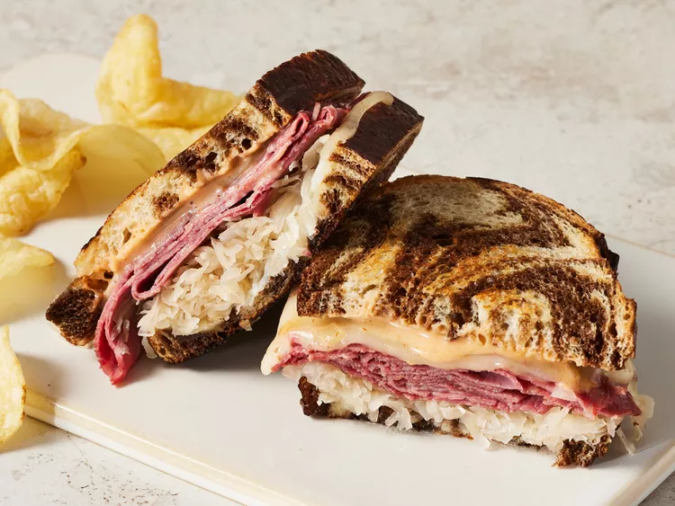

Sándwich Reuben

Descripcion
El Reuben es un sándwich a la parrilla que lleva carne en conserva sobre pan de centeno. El Reuben es un clásico del menú de las tiendas de delicatessen de estilo judío, pero técnicamente no es kosher porque combina carne y queso.
Un sándwich Reuben tradicional consiste en carne en conserva cortada fina, queso suizo y chucrut sobre pan de centeno untado con aderezo ruso o Thousand Island.
Ingredientes
- 8 rebanadas de pan de centeno
- ½ taza de aderezo Thousand Island
- 8 rebanadas de queso suizo
- 8 rebanadas de carne en conserva cortada en lonchas tipo delicatessen
- 1 taza de chucrut, escurrido
- 2 cucharadas de mantequilla ablandada
Pasos
- Paso 1: Reúna todos los ingredientes y precaliente una plancha o sartén grande a fuego medio.
- Paso 2: Unte uniformemente un lado de las rebanadas de pan con el aderezo Thousand Island.
- Paso 3: Sobre cuatro rebanadas de pan, coloque una rebanada de queso suizo, 2 rebanadas de carne en conserva, 1/4 de taza de chucrut y una segunda rebanada de queso suizo. Cubra con las rebanadas de pan restantes, con el aderezo hacia abajo. Unte con mantequilla la parte superior de cada sándwich.
- Paso 4: Coloque los sándwiches con el lado de la mantequilla hacia abajo sobre la plancha precalentada; unte la parte superior de cada sándwich con la mantequilla restante. Cocine a la parrilla hasta que ambos lados estén dorados, aproximadamente 5 minutos por lado.
- Paso 5: Servir caliente. ¡Disfrutar!